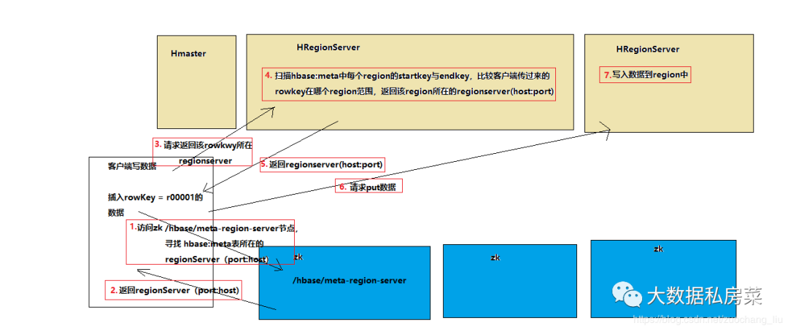
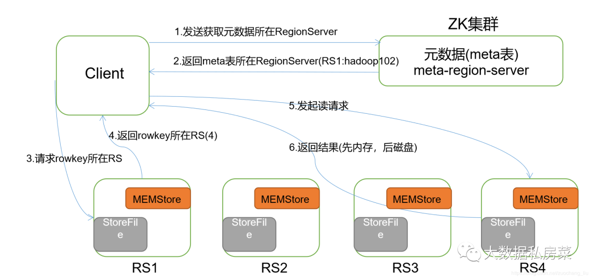

大数据 008hbase核心知识整理
一.Hbase调优的方法
- 高可用
在HBase中Hmaster负责监控RegionServer的生命周期，均衡RegionServer的负载，如果Hmaster挂掉了，那么整个HBase集群将陷入不健康的状态，并且此时的工作状态并不会维持太久。所以HBase支持对Hmaster的高可用配置。 - 预分区
每一个region维护着startRow与endRowKey，如果加入的数据符合某个region维护的rowKey范围，则该数据交给这个region维护。那么依照这个原则，我们可以将数据所要投放的分区提前大致的规划好，以提高HBase性能。 - 优化RowKey设计
一条数据的唯一标识就是rowkey，那么这条数据存储于哪个分区，取决于rowkey处于哪个一个预分区的区间内，设计rowkey的主要目的 ，就是让数据均匀的分布于所有的region中，在一定程度上防止数据倾斜 - 内存优化
HBase操作过程中需要大量的内存开销，毕竟Table是可以缓存在内存中的，一般会分配整个可用内存的70%给HBase的Java堆。但是不建议分配非常大的堆内存，因为GC过程持续太久会导致RegionServer处于长期不可用状态，一般16~48G内存就可以了，如果因为框架占用内存过高导致系统内存不足，框架一样会被系统服务拖死。
二.hbase的rowkey怎么创建好？列族怎么创建比较好？
hbase存储时，数据按照Rowkey的字典序(byte order)排序存储。设计key时，要充分排序存储这个特性，将经常一起读取的行存储放到一起。(位置相关性)
一个列族在数据底层是一个文件，所以将经常一起查询的列放到一个列族中，列族尽量少，减少文件的寻址时间。
设计原则
- rowkey 长度原则
- rowkey 散列原则
- rowkey 唯一原则
如何设计
- 生成随机数、hash、散列值
- 字符串反转
- 字符串拼接
三.hbase过滤器实现用途
- 增强hbase查询数据的功能
- 减少服务端返回给客户端的数据量
四.HBase宕机如何处理
宕机分为HMaster宕机和HRegisoner宕机，
如果是HRegisoner宕机，HMaster会将其所管理的region重新分布到其他活动的RegionServer上，由于数据和日志都持久在HDFS中，该操作不会导致数据丢失。所以数据的一致性和安全性是有保障的。
如果是HMaster宕机，HMaster没有单点问题，HBase中可以启动多个HMaster，通过Zookeeper的Master Election机制保证总有一个Master运行。即ZooKeeper会保证总会有一个HMaster在对外提供服务。
五.hive跟hbase的异同点是什么
共同点：
1.hbase与hive都是架构在hadoop之上的。都是用hadoop/hdfs作为底层存储
不同点：
-
Hive是建立在Hadoop之上为了减少MapReduce jobs编写工作的批处理系统，HBase是为了支持弥补Hadoop对实时操作的缺陷的项目 。
-
想象你在操作RMDB数据库，如果是全表扫描，就用Hive+Hadoop,如果是索引访问，就用HBase+Hadoop 。
-
Hive query就是MapReduce jobs可以从5分钟到数小时不止，HBase是非常高效的，肯定比Hive高效的多。
-
Hive本身不存储和计算数据，它完全依赖于HDFS和MapReduce，Hive中的表纯逻辑。
-
hive借用hadoop的MapReduce来完成一些hive中的命令的执行
-
hbase是物理表，不是逻辑表，提供一个超大的内存hash表，搜索引擎通过它来存储索引，方便查询操作。
-
hbase是列存储，hive文件可以采用列存也可以采用行式存储。
-
hdfs作为底层存储，hdfs是存放文件的系统，而Hbase负责组织文件。
-
hive需要用到hdfs存储文件，需要用到MapReduce计算框架。
六.hbase写流程

- 客户端要连接zookeeper, 从zk的/hbase节点找到hbase:meta表所在的regionserver（host:port）;
- regionserver扫描hbase:meta中的每个region的起始行健，对比r000001这条数据在那个region的范围内；
- 从对应的 info:server key中存储了region是有哪个regionserver(host:port)在负责的；
- 客户端直接请求对应的regionserver；
- regionserver接收到客户端发来的请求之后，就会将数据写入到region中
七.hbase读流程

- 首先Client连接zookeeper, 找到hbase:meta表所在的regionserver;
- 请求对应的regionserver，扫描hbase:meta表，根据namespace、表名和rowkey在meta表中找到r00001所在的region是由那个regionserver负责的；
- 找到这个region对应的regionserver
- regionserver收到了请求之后，扫描对应的region返回数据到Client
(先从MemStore找数据，如果没有，再到BlockCache里面读；BlockCache还没有，再到StoreFile上读(为了读取的效率)；如果是从StoreFile里面读取的数据，不是直接返回给客户端，而是先写入BlockCache，再返回给客户端。)
八.hbase数据flush过程
- 当MemStore数据达到阈值（默认是128M，老版本是64M），将数据刷到硬盘，将内存中的数据删除，同时删除HLog中的历史数据；
- 并将数据存储到HDFS中；
- 在HLog中做标记点。
九.数据合并过程
- 当数据块达到4块，hmaster将数据块加载到本地，进行合并
- 当合并的数据超过256M，进行拆分，将拆分后的region分配给不同的hregionserver管理
- 当hregionser宕机后，将hregionserver上的hlog拆分，然后分配给不同的hregionserver加载，修改.META.
- 注意：hlog会同步到hdfs
十.Hmaster和Hgionserver职责
Hmaster的功能:
- 管理用户对Table的增、删、改、查操作；
- 记录region在哪台Hregion server上
- 在Region Split后，负责新Region的分配；
- 新机器加入时，管理HRegion Server的负载均衡，调整Region分布
- 在HRegion Server宕机后，负责失效HRegion Server 上的Regions迁移。
Hgionserver的功能:
- HRegion Server主要负责响应用户I/O请求，向HDFS文件系统中读写数据，是HBASE中最核心的模块。
- HRegion Server管理了很多table的分区，也就是region。
十一.HBase列族和region的关系？
HBase有多个RegionServer，每个RegionServer里有多个Region，一个Region中存放着若干行的行键以及所对应的数据，一个列族是一个文件夹，如果经常要搜索整个一条数据，列族越少越好，如果只有一部分的数据需要经常被搜索，那么将经常搜索的建立一个列族，其他不常搜索的建立列族检索较快。
十二、如何避免读、写HBaes时访问热点问题？
-
加盐
这里所说的加盐不是密码学中的加盐，而是在rowkey的前面增加随机数，具体就是给rowkey分配一个随机前缀以使得它和之前的rowkey的开头不同。给多少个前缀？这个数量应该和我们想要分散数据到不同的region的数量一致（类似hive里面的分桶）。 （ 自己理解：即region数量是一个范围，我们给rowkey分配一个随机数，前缀（随机数）的范围是region的数量） 加盐之后的rowkey就会根据随机生成的前缀分散到各个region上，以避免热点。 -
哈希
哈希会使同一行永远用一个前缀加盐。哈希也可以使负载分散到整个集群，但是读却是可以预测的。使用确定的哈希可以让客户端重构完整的rowkey，可以使用get操作准确获取某一个行数据。 -
反转
第三种防止热点的方法是反转固定长度或者数字格式的rowkey。这样可以使得rowkey中经常改变的部分（最没有意义的部分）放在前面。这样可以有效的随机rowkey，但是牺牲了rowkey的有序性。反转rowkey的例子：以手机号为rowkey，可以将手机号反转后的字符串作为rowkey，从而避免诸如139、158之类的固定号码开头导 致的热点问题。 -
时间戳反转
一个常见的数据处理问题是快速获取数据的最近版本，使用反转的时间戳作为rowkey的一部分对这个问题十分有用，可以用Long.Max_Value – timestamp追加到key的末尾，例如[key][reverse_timestamp] ,[key] 的最新值可以通过scan [key]获得[key]的第一条记录，因为HBase中rowkey是有序的，第一条记录是最后录入的数据。 -
尽量减少行和列的大小
在HBase中，value永远和它的key一起传输的。当具体的值在系统间传输时，它的rowkey，列名，时间戳也会一起传输。如果你的rowkey和列名很大，HBase storefiles中的索引（有助于随机访问）会占据HBase分配的大量内存，因为具体的值和它的key很大。可以增加block大小使得storefiles索引再更大的时间间隔增加，或者修改表的模式以减小rowkey和列名的大小。压缩也有助于更大的索引。 -
其他办法
列族名的长度尽可能小，最好是只有一个字符。冗长的属性名虽然可读性好，但是更短的属性名存储在HBase中会更好。也可以在建表时预估数据规模，预留region数量，例如create ‘myspace:mytable’, SPLITS => [01,02,03,,…99]
十三.布隆过滤器在HBASE中的应用
主要提高随机读的性能
十四.Hbase在建表时的设计原则(注意事项)
- 预分区
Hbase默认建表时有一个 region，这个 region的 rowkey是没有边界的，即没有 startkey和 endkey在数据写入时，所有数据都会写入这个默认的 region，随着数据量的不断增加，会进行 split，分成2个 region在此过程中，会产生两个问题:
(1). 数据往一个 region写，会有写热点问题。
(2). region split会消耗宝贵的集群I/0资源。我们可以控制在建表的时候，创建多个空 region，并确定每个 region的startkey和endkey，这样只要我们的 rowkey设计能均匀的命中各个 region，就不会存在写热点问题。自然 split的几率也会大大降低。 - rowkey设计原则
(1) rowkey长度越短越好。
数据的持久化文件 Hfile中是按照 Keyvalue存储的，如果 rowkey过长会极大影响File的存储效率; Memstore将缓存部分数据到内存，如果 rowkey字段过长，内存的有效利用率就会降低，系统不能缓存更多的数据，这样会降低检索效率。
(2) rowkey尽量散列。
建议将 rowkey的高位作为散列字段，将提高数据均衡分布在每个 Regionserver以实现负载均衡的几率。(哈希、反转等也可以避免热点问题
(3) rowkey保证唯一性。 - 列族设计原则
(1) 建表至少指定一个列族，但一般不超过三个，一般一个，因为 flush和 compact是以 region为单位，所以，某个 column family在 flush的时候，它邻近的 column family也会因关联效应被触发f1ush，最终导致系统产生更多的1/0
(2) 列族名字不宜过长，会冗余存储。
(3) 不同列族的记录的数量级不易相差太大，比如A，B两个列族，A为100万条，B为100亿条，则A会被分散到多个 region(可能会跨 reglon server)，导致对A的扫描效率低下
十五.hbase优化方法
- 减少调整
(1) 减少 region分裂
根据你的 Rowkey设计来进行预建分区，减少 region的动态分裂。
(2) 给HFile设定合适大小
Hfile是数据底层存储文件，在每个 memstore进行刷新时会生成一 Hfile，当 Hfile增加到一定程度时，会将属于一个 region的HFi1e进行合并，这个步骤会带来开销但不可避免，但是合并后 reglon大小如果大于设定的值，那么 region会进行分裂。为了减少这样的无谓的1/0开销，建议估计项目数据量大小，给 Hfile设定一个合适的值 - 减少启停
Hbase中也存在频繁开启关闭帯来的问题。
(1) 关闭 Compaction，在闲时进行手动 Compact ion0因为 Hbase中存在 Minor Compaction和Major Compaction，合并就是1/0读写，大量的 Hfile进行肯定会带来I/0开销，甚至是1/0风暴所以为了避免这种不受控制的意外发生，建议关闭自动 Compact ion，在闲时进行 compaction
(2)当需要写入大量离线数据时建议使用 Bulkload - 减少数据量
(1) 开启过滤，提高查询速度，可以减少网络10
(2) 使用压缩:一般推荐使用 Snappy和LZ0压缩。 - 合理设计(建表注意事项)
分区、 Rowkey设计、列族的设计
十六. Hbase中的region server发生故障后的处理方法(zk–>WAL)
Hbase检测宕机是通过Zookeeper实现的，正常情况下 Regionserver会周期性向 Zookeeper发送心跳，一旦发生宕机，心跳就会停止，超过一定时间( Sessi ontimeout) Zookeeper就会认为 Regionserver宕机离线，并将该消息通知给 Master0一台 Regionserver只有一个HLog文件，然后，将HLog按照Region进行分组，切分到每个 regionserver中，因此在回放之前首先需要将og按照 Region进行分组，每个 Region的日志数据放在一起，方便后面按照 Region进行回放。这个分组的过程就称为HLog切分。然后再对 region重新分配，并对其中的Hog进行回放将数据写入 memstore刷写到磁盘，完成最终数据恢复。